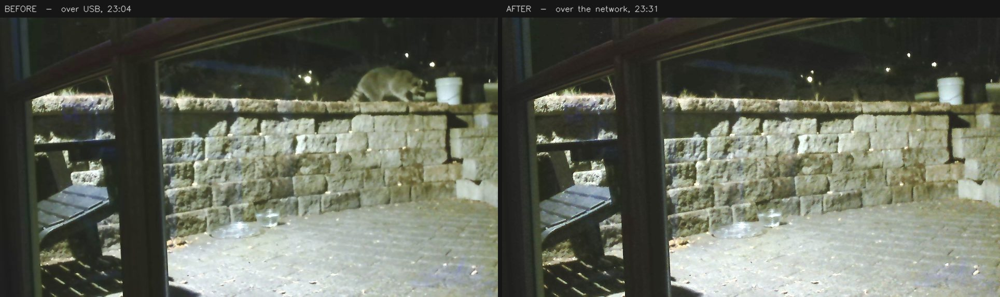

When a raccoon shows up at the glass, you do something automatic: "you look like Notch… but you're not acting like Notch." That tiny friction is the whole project. You just ran two classifiers — one for appearance ("looks like X"), one for behaviour ("but doesn't act like X") — and they disagreed.
The disagreement is the information. It's either a new individual who resembles a known one, or a known one in an unusual state — and which it is, is exactly what you want to know.
So the rule for the whole system: keep appearance and behaviour on separate axes, and surface both. Never collapse them into one confident answer. The job isn't to be an oracle that names every raccoon — it's to give your own instinct a memory and a second opinion. Everything that follows is built to that brief, and it's honest about where it falls short.
A camera left running all day can't run a GPU model on every frame — it'd melt. So the first thing in the loop is the cheapest: a motion gate (MOG2 background subtraction) that does almost nothing until something actually moves. Only then does it wake MegaDetector v6 — Microsoft's camera-trap model, run straight through Ultralytics — to ask "is that an animal?" Each hit becomes a cropped image, a shot-quality score, and one row in a SQLite database.
Step a single real capture through every stage below. Watch the detector stay asleep until the motion blob crosses the threshold — that's why the rig can sit running next to you.
The camera shoots through a sliding glass door, and most of the action is after dark. Reflections and haze soften everything; a raccoon pressed to the pane with a light on it reads clearly, but plenty of frames come out a little flared. There's no fixing the optics — so instead every crop is scored for shot quality: sharpness, with a bump for the bright eyeshine of an animal looking back at the lens.
That score is why the journal can lead each visit with its cutest, sharpest frame rather than merely its most confident one. Scrub from the softest shots to the sharpest and watch the real spread.
Every crop gets a species, zero-shot, from BioCLIP 2 — no training, just a list of candidate species as text. On a real raccoon or crow it's emphatic (0.99, 1.00). But BioCLIP has one blind spot that took a while to understand: it's an organism-only model. Show it an empty deck or a plate of food and it cannot say "not an animal" — it's forced to pick the nearest species anyway.
The fix isn't a better species list; it's a different model asking a different question. A
general CLIP runs first and answers the one thing BioCLIP can't:
"is this even an animal?" Real animals score near zero; genuine non-animals score high.
The cut sits at 0.60, in the wide empty gap between the two.
Drop crops onto the bench and drag the threshold yourself.
Now the hard part: telling individuals apart. Each crop becomes a 1,536-number appearance vector (MegaDescriptor, a wildlife re-ID model). Two vectors that point the same way are two crops that look alike. Plotted below — a real map of raccoon crops — and the first honest finding lands immediately.
Colour by visit and the dots clump into tight little ponds: the same raccoon, same night, scores up to 0.99. Colour by individual and those colours smear across each other — the same raccoon on two different nights barely beats two different raccoons. Background and pose dominate. Single crops can't be matched across sessions.
So average each visit's best crops into one prototype and the noise washes out. The same animal's nights now match at ~0.84; two different raccoons sit near 0.37. Hit "collapse to prototypes" and watch it happen — then note that Elliot, who rarely visits alone, stays stubbornly ambiguous. That's not a bug; it's why a human still confirms.
Before you can name individuals, you have to notice when there are two of them. When the detector returns two boxes, the question is whether they're two raccoons or one raccoon boxed twice. The test is intersection-over-union — how much the boxes overlap. A lot of overlap means the detector double-counted one animal (non-max suppression merges them); only a little means two separate bodies.
Below 0.45, the visit earns a "2+ raccoons" badge, and
its blended appearance is set aside — because one name stamped on two animals poisons the
template. Drag the boxes and watch the verdict flip. (In practice the sparse stills miss most
pairs; the full-rate clips catch them — which is exactly what the next chapter leans on.)
Because appearance is only a hint, the system never names anyone on its own. It suggests, and a human confirms — and every confirmation sharpens the next suggestion. Play the human: here are real visits with the model's actual guess. Call it, then see the truth and how you scored against the machine.
Then the finale — the trick the project is proudest of. A raccoon who only ever shows up with another raccoon never gives you a clean solo photo to learn from. But a behaviour clip tracks each animal separately, so its frames can be split apart. One real two-raccoon visit un-blends into 36 and 29 frames — two distinct animals out of one blurry crowd — which is how a never-solo regular finally earns an identity.
A still says who and when; a clip says how. The detector runs over every frame of a behaviour clip and threads the boxes into one track per animal, then reads its motion — how fast, how straight, how hesitant — and the stride cadence: the rhythm of the body bobbing up and down as it walks, pulled straight off the video with no extra sensor.
Gait is a confound-robust second opinion for identity: a limp reads the same from any angle, where a single soft still does not. Pick a real walk and watch its metronome tick at the cadence the rig actually measured.
Back to the beginning. Appearance is one axis; behaviour is the other. From the visit log, each raccoon gets a profile — when they arrive, how long they stay. Raccoons here run 20:00–02:00; Notch skews even later.
Plot a visit on the two axes at once. When appearance and behaviour agree, it's quiet. When they disagree — looks like Notch, but arrived at 2pm — the alert fires: either a look-alike, or Notch doing something unusual. Grab a visit and drag its arrival time around the clock; watch the behaviour needle swing and the alarm trip. That swing is the whole project, made literal.
None of this is one clever model. It's a lot of small, boring, robust pieces around one idea: most of the value is in capture and accumulation, not the fancy network. One SQLite database is the brain; the live dashboard is hand-written on Python's standard library with no web framework; the GPU sleeps through the quiet hours.
The page you're reading is a frozen, camera-free export of that database — the live rig is localhost-only because it shows a live feed of someone's backyard. This is the opposite: a curated, public slice — person-labelled detections filtered out, a hand-written veto for the ones the labels got wrong, and the survivors checked by eye.
A camera bolted to one computer is a camera that cannot outlive it. When the rig moved to a new machine with nowhere to plug the webcam in, the camera had to stop being this PC's camera and start being the network's camera.
The bridge is a Raspberry Pi 3B from 2016, and its job is deliberately unambitious. It does not decode the video and it does not re-encode it. The webcam already emits JPEG frames; the Pi forwards those same bytes to whoever asks. It does this at 0% CPU — the work is copying, not computing, and a nine-year-old board is wildly overqualified for copying.
Re-encoding would have been the easy choice, and it would have quietly invalidated every number the rig had ever measured.
That matters more than it sounds. The motion threshold is a count of pixels. The ignore zones are pixel rectangles. The shot-quality score that decides which crop of a raccoon is the cutest is a measure of sharpness. All three are calibrated against the exact pixels this particular camera produces through this particular pane of glass. Change the pixels — even improve them — and years of tuning silently stops meaning what it meant.

One claim in the first draft of this chapter was wrong, and the correction turned out to be more interesting than the claim. "The pixels are bit-identical" — they are not. The bytes are identical, but the software that turns bytes into pixels changed, and the same JPEG decoded two different ways disagrees about 96.7% of them. The measured effect on shot-quality was 0.31%, against a night-to-night variation a hundred times larger. Harmless — but "we measured it" and "it must be fine" are different sentences, and only one of them is worth writing down.
The move also brought a new way to fail silently, which by now is this project's recurring theme. When the camera is unplugged, the streaming software does not stop and does not complain. It serves a black rectangle, forever, at a perfectly valid frame size. The rig would read those frames, decode them successfully, find nothing moving in them, and report itself in perfect health for as long as you left it running.
So a watchdog now asks, every thirty seconds, whether the camera is actually there — and it was tested by pulling the plug rather than by reasoning about it. Which is the honest summary of the whole project: "no errors" keeps turning out to mean nothing at all, and the only cure is to go and look.
The rig had been reachable from every phone in the house for months, and nobody used it. Not because it was hard to start — because of what you had to say to invite someone. “One-nine-two dot one-six-eight dot nought dot one-oh-eight, colon eight thousand” is not an address. It is a dictation exercise, and it was printed by a launcher window that closed a second later, so even the person who owned the rig had to go looking for it.
It was not durable either. That number is a DHCP lease, and a lease is not a promise. The morning email works around this by re-deriving the address every single issue; a number written on the back of an envelope cannot.
So the rig stopped being an address and became a name. It answers multicast DNS now — every phone on the Wi-Fi already asks the local network “who is critter-cam?”, and the rig is the thing that answers. The other half of the win is the port: the dashboard moved to 80, the port a browser assumes, because that is the only thing that turns critter-cam.local:8000 into critter-cam.local.
The difference between an address you dictate and one a child can type.
Three things had to be right for that to work at all, and every one of them would have failed quietly. The rig already carried a guard against DNS rebinding that accepted only localhost and private IP literals — it would have refused the very name being advertised. A name that resolves perfectly and then returns 403 is worse than no name, because it looks like the network’s fault.
Port 80 is also a port a bind can lose, so a failed bind falls back to the old one. But the dashboard checks that a form submission came from the page it served by comparing ports — so a rig that fell back while still believing it was on 80 would have served a dashboard that looked completely normal and silently refused every label edit made on it.
And one that only appears after a crash. A responder that dies without saying goodbye leaves its name cached on the network, and the library refuses to re-register a name something else still answers for. The rig has a watchdog whose entire job is restarting it after it dies — so the restart lands inside its own ghost’s lifetime almost by construction, and the name would have gone missing on exactly the reboots nobody is watching. It now checks who holds the name: its own address it reclaims, a different machine it leaves alone.
Then the thing that actually stopped the first phone from connecting had nothing to do with any of it. Windows classifies a new Wi-Fi network as Public by default, and on a Public network the firewall rule matching the rig is Block. Every test run on the rig machine had passed — traffic to your own address never touches the firewall. The name resolved. The service was discoverable. The dashboard answered on port 80. It just answered only to itself.
One dropdown, and the kid was in.
Which is this project’s oldest lesson wearing a new costume: everything was working, and nothing was reachable. “It works on the rig” is a sentence about the rig. The only cure, again, was to go and look — and to notice that the place it had been looked at was the one place that could not fail.
The morning email got a name the same afternoon, for the same reason. It had been calling itself The Morning Dispatch or The Evening Dispatch depending on which half of the day it was describing, which said the period twice and made one small newspaper look like two. It is the Creature Report now, in the inbox and on the dashboard tab it links to — because the thing you hand to other people is the part that has to be easy to say.